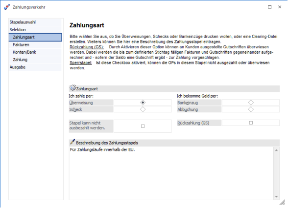
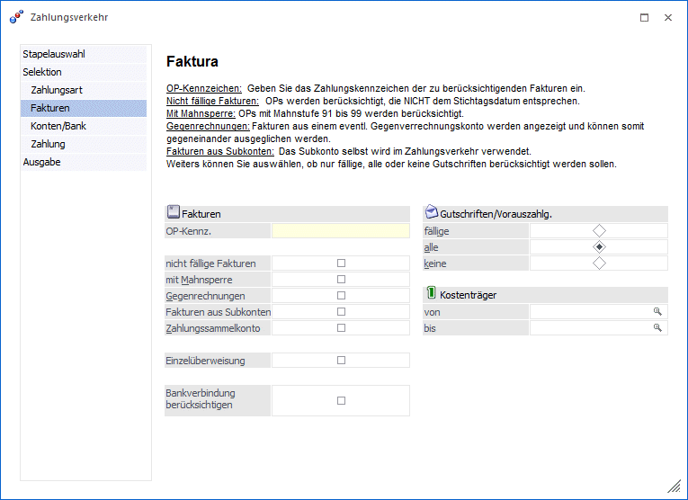
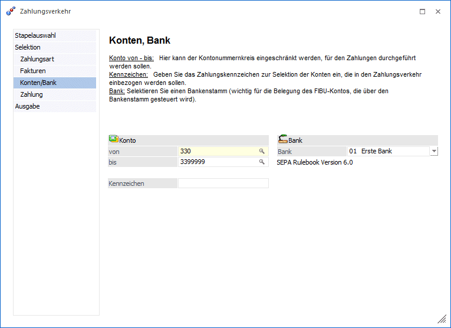
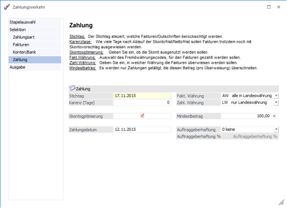
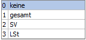

Erfolgt die Bearbeitung eines Zahlungsstapels über den Button "Assistent" gelangen Sie in das Fenster Zahlungsverkehr. In diesem Fenster werden die Auswahlen schrittweise getroffen, wie und an wen (bzw. von wem) bezahlt (bzw. eingezogen) wird.
Zahlungsart

Folgende Optionen stehen Ihnen zur Auswahl:
ü Überweisung:
Druck der
Überweisungen, offener Postenausgleich und Zahlungsbuchung (natürlich abhängig
davon, ob die automatische Buchung aktiviert wurde oder nicht)
ü Scheck:
Scheckdruck, offener
Postenausgleich und Zahlungsbuchung (natürlich abhängig davon, ob die
automatische Buchung aktiviert wurde oder nicht)
ü Bankeinzug:
Bankeinzug, offener
Postenausgleich und Zahlungsbuchung (natürlich abhängig davon, ob die
automatische Buchung aktiviert wurde oder nicht)
ü Abbuchung:
Wie Bankeinzug,
allerdings wird der Datensatz für die Clearingdatei mit einem unterschiedlichen
Code aufbereitet, da die Banken Abbuchungsauftrag und Bankeinzug
unterscheiden.
Ø Rückzahlung (GS):
Durch Aktivieren dieser Option können an Kunden ausgestellte Gutschriften überwiesen werden. Dabei werden die bis zum definierten Stichtag fälligen Fakturen und Gutschriften gegeneinander aufgerechnet und -sofern der Saldo eine Gutschrift ergibt- zur Zahlung vorgeschlagen.
Ø Stapel kann nicht ausbezahlt werden (Sperrstapel):
Ist diese Checkbox aktiviert, können die OPs in diesem Stapel nicht ausgezahlt oder überwiesen werden. Dies ist dann sinnvoll, wenn der Stapel z.B. nur als "Sammelstapel" für alle fälligen Überweisungen dient, die OPs aber für die eigentliche Überweisung in andere Stapel weiterverschoben werden sollen (siehe "Zahlungsstapel verteilen").
Hinweis
Bei SEPA Lastschriften ist es nicht mehr notwendig zwischen Bankeinzug (SEPA-Basislastschriften) und Abbuchung (SEPA-Firmenlastschriften) zu unterscheiden, da dies über die Bankverbindung und das Mandat erkannt wird.
Faktura

Folgende Optionen stehen Ihnen zur Auswahl:
Ø OP-Kennzeichen
Geben Sie das Zahlungskennzeichen zur Selektion der Fakturen ein, die in den Zahlungsverkehr einbezogen werden sollen. Das Kennzeichen kann im Personenkontenstamm (Zahlungs-KZ) vorbelegt werden und im Buchungsprogramm manuell im Einzelfall übersteuert werden. Damit können z.B. alle Fakturen, die ein Zahlungskennzeichen S haben automatisch mit Scheck gezahlt werden, alle OPs die mit z.B. "B" gekennzeichnet wurden, über Bankeinzug eingezogen werden, etc.
Ø Nicht fällige Fakturen
Alle OPs werden in den Stapel einbezogen, auch wenn Sie NICHT dem Stichtagsdatum entsprechen.
Ø Mit Mahnsperre
Bei Aktivieren der Checkbox werden die Fakturen mit Mahnstufe 91 - 99 mitgerechnet.
Ø Gegenrechnungen
Wenn die Checkbox Gegenverrechnungskonten aktiviert wird, werden auch alle Fakturen aus einem evtl. Gegenverrechnungskonto (z. B. Debitorische Kreditoren) angezeigt und können somit gegeneinander ausgeglichen werden.
Ø Fakturen aus Subkonten
Bei Aktivierung dieser Option werden die OPs der FIBU-Subkonten nicht über das Hauptkonto zur Zahlung vorgeschlagen, sondern das Subkonto selbst wird im Zahlungsverkehr verwendet (z.B. bei verschiedenen Bankverbindungen pro Konto könnte über Anlage von Subkonten automatisch die abweichende Bankverbindung angesprochen werden.
Ø Zahlungssammelkonto
Wird diese Checkbox aktiviert, werden alle Konten, die im FIBU-Register des Personenkontenstammes ein Zahlungssammelkonto eingetragen haben, zu diesem zusammengefasst. Wie bei den Debitorischen Kreditoren werden die Offenen Posten aller betroffenen Konten ausgeglichen, Im Buchungsstapel wird aber nur eine Buchung mit dem Zahlungssammelkonto erstellt.
Ø Einzelüberweisung
Durch Anhaken der Checkbox wird jede einzelne OP-Zeile zur Einzelüberweisung gebracht (da zusätzlich zum Normaltext mit FA-Nr, Zahlungsbetrag und Skonto auch der in der OP hinterlegte Kurz-OP-Text in der Überweisungszeile mitübergeben wird).
Ø Bankverbindung berücksichtigen
Wird diese Funktion aktiviert, wird die Tabelle in dem Fenster "Zahlungsverkehr-Selektion" um die Spalte Bankverbindung erweitert. Für jede Bankverbindung des Personenkontos werden die dazu gehörigen OPs und die Summe pro Bankverbindung aufgelistet. Diese Bankverbindung kann noch geändert werden. Bei aktivierter Checkbox können die Optionen "Gegenrechnungen" und "Zahlungssammelkonto" nicht verwendet werden. Bei Verwendung eines Factoring-Kontos werden die Bankverbindungen aus dem OP ignoriert. Bei der Verwendung mehrerer Mandate zu einem Debitor muss das Flag "Bankverbindungen berücksichtigen" gesetzt werden, damit im SEPA-Zahlungsverkehr die einzelnen Mandate und Bankverbindungen berücksichtigt werden.
Ø Gutschriften/Vorauszahlg.
Hier kann bestimmt werden, wie Gutschriften bzw. Vorauszahlungen behandelt werden sollen. Dabei gibt es folgende Optionen:
ü fällige Gutschriften
nur die
per Stichtag fälligen Gutschriften werden in den Zahlungslauf mit einbezogen
ü alle Gutschriften
alle
Gutschriften - unabhängig vom Stichtag - werden in den Zahlungsvorschlag mit
einbezogen
ü keine Gutschriften
sämtliche
Gutschriften werden im Zahlungsvorschlag ignoriert
Ø Kostenträger
Hier können die zur Zahlung vorgeschlagenen Fakturen nach Kostenträgern eingeschränkt werden.
Konten / Bank

Folgende Optionen stehen zur Auswahl:
Konto
Ø von - bis
Hier kann der Kontonummernkreis eingeschränkt werden, für den Zahlungen durchgeführt werden sollen.
Ø Kennz.
Geben Sie das Zahlungskennzeichen zur Selektion der Konten ein, die in den Zahlungsverkehr einbezogen werden sollen. Das Kennzeichen kann im Personenkontenstamm (Zahlungskennz.) vorbelegt werden (und dient als Vorbesetzung für das Kennzeichen in der Faktura - das im Buchungsprogramm im Einzelfall noch manuell übersteuert werden kann.
Ø Bank
Selektieren Sie einen Bankenstamm (wichtig für die Belegung des FIBU-Kontos, die über den Bankenstamm gesteuert wird). Sollten Sie noch keine Bankenstammdaten definiert haben, holen Sie dies bitte über Anwahl des Menüpunktes
1 Stammdaten
1 Zahlungsstammdaten
1 Bankenstamm
nach, bevor Sie den Zahlungsverkehr weiter bearbeiten.
Unter der ausgewählten Bank wird die im Bankstamm hinterlegte SEPA-Version zur Information angezeigt.
Zahlung

Ø Stichtag
Der Stichtag steuert, welche Fakturen/Gutschriften in den Zahlungsvorschlag einbezogen werden.
Ø Karenztage
Die Karenztage geben an, wie viele Tage nach Ablauf der Skontofrist / Nettofrist Fakturen trotzdem noch mit Skontovorschlag ausgewiesen werden.
Ø Skontooptimierung
Geben Sie ein, ob die Skonti ausgenutzt werden sollen, oder ob der Zahlungsvorschlag mit Ablauf der Nettofrist erstellt werden soll. Ist in den FIBU-Parametern die Option "Skontotoleranzen beim Vorschlag berücksichtigen" aktiviert, wird der Toleranzprozentsatz aus der im Personenkonto hinterlegten Zahlungsbedingung zu den Skontoprozenten addiert und vorgeschlagen, wenn die Faktura innerhalb der Skontofrist bezahlt wird. Die Toleranztage der Zahlungskondition erhöhen die Skontofrist.
Ø Zahlungsdatum
Dieses Datum wird für die Bildung des Buchungssatzes und die
OP-Auszifferung verwendet.
Wird der Zahlungsverkehr mit Fremdwährung
erstellt, so wird der zum Zahlungsdatum gültige Fremdwährungskurs verwendet, um
ggf. Kursdifferenzen zu erstellen.
Ø Fakt.Währung
Auswahl des Fremdwährungscodes, für den Fakturen gezahlt werden sollen. Bei "AW" werden alle Fakturen in der Landeswährung des Mandanten in den Zahlungslauf einbezogen, egal in welcher Währung die Fakturen gebucht wurden. Bei "LW" werden nur die in Landeswährung gebuchten Fakturen in den Zahlungsstapel eingelesen. Bei Auswahl einer bestimmten Währung werden nur die Fakturen in den Zahlungslauf einbezogen, die in der selektierten Währung erstellt worden sind.
Ø Zahl.Währung
In diesem Feld können Sie bestimmen, in welcher Währung die Fakturen überwiesen werden sollen. Diese Option ist natürlich NICHT anzuwenden, um z.B. Fakturen, die in EUR erstellt worden sind, in USD auszuziffern, sondern um z.B. die Überweisungen in EURO durchzuführen, obwohl die Fakturen z.B. in CHF gebucht worden sind.
Ø Mindestbetrag
Es werden nur Zahlungen getätigt, die den Mindestbetrag (pro Überweisung) überschreiten. Durch Drücken der F9-Taste oder Anklicken des -Buttons wird das Umrechnungsfenster geöffnet, in dem der Betrag auf Basis der im Mandantenstamm hinterlegten Landeswährungen sowohl in Landeswährung 1 als auch in Landeswährung 2 eingegeben werden kann. Für die Abprüfung wird dann der Betrag in Landeswährung 1 verwendet.
Auftraggeberhaftung
Über die Auswahllistbox

kann gesteuert werden, ob an das Dienstleistungszentrum der GKK überwiesen werden soll. Der Prozentsatz wird je nach Auswahl mit den Prozentsätzen aus dem Mandantenstamm vorbelegt.
Haben Sie alle Selektionen nach Ihren Wünschen in den vier Schritten des Zahlungsverkehr-Assistenten eingestellt gelangen Sie mit dem "Weiter-Button" in das Fenster "Zahlungsverkehr-Selektion". Die weitere Vorgangsweise ist detailliert im Kapitel Zahlungsverkehr-Selektion beschrieben.